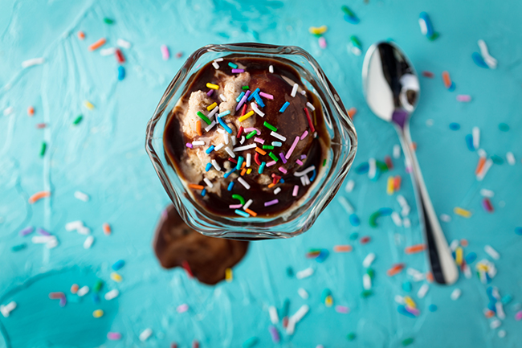

OUR PAST
Bonney got his first taste of the dairy business while driving a milk wagon for Mother's Diary in 1965. The owner of the dairy, Bob Arthur eventually asked Bonney to partner with him. Starting his journey from there, Bonney had partnered with many people. In 1980 as his business grew, Bonney built an Ice Cream shop. His aim was to serve the public with the delicious ice cream being made on site. Bonney eventually sold his business to his son in law and later on he sold it to Steffy.
OUR MISSION
To provide our customers with the enjoyment and ultimate ice cream experience and to promote and motivate the Entrepreneurial spirit.
OUR VISION
To communicate with our owners and plan a road for growth with our vendors and partners.
PURPOSE OF ICE CREAMERY

To make, distribute, and sell the finest-quality ice cream with a continued commitment to incorporate natural ingredients and promote business practices that respect the Earth and the Environment. To operate the Company in a way that actively recognizes the central role that business plays in society by initiating innovative ways to improve the quality of life locally, nationally, and internationally.